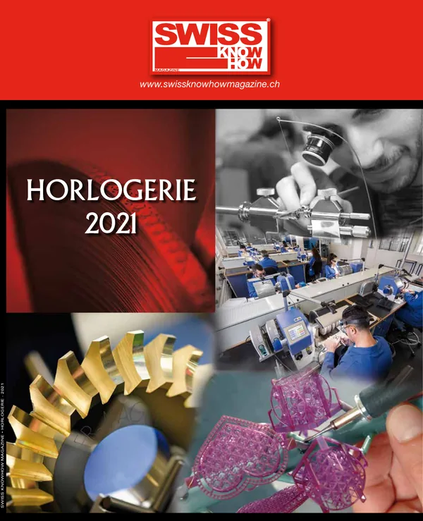

« L'objectif du WOSTEP ACADEMY, c'est de mettre l'école en ligne, de donner une dimension digitale à la réalité. »— Johann Kunz
Texte intégral
École d’horlogerie internationale basée à Neuchâtel, la Fondation WOSTEP se lance dans l’e-learning. Elle met en place une plate-forme digitale qui vient compléter les cours dispensés à Neuchâtel et connecter ses 13 écoles partenaires dans un réseau mondial d’enseignement. Au passage, plusieurs formations sont mises au goût du jour.
Le centre WOSTEP fait un grand pas en direction de la digitalisation. L’objectif ? Mettre en place un concept d’e-learning en plus des cours dispensés habituellement par l’école. « L’intention n’est pas de simplement proposer les cours sur une plate-forme web dans le futur, mais d’accompagner l’apprenant du début à la fin de son cursus, de son inscription à l’école jusqu’à son examen final », explique Johann Kunz, directeur de la Fondation WOSTEP.
Le centre de formation WOSTEP a été fondé en 1966 dans le but de former des horlogers Nord-Américains pour le service clientèle de l’industrie horlogère suisse. Il s’est rapidement développé, étendant son offre et formant des horlogers du monde entier en réponse aux besoins de l’industrie. Depuis 2006, l’école a un statut de Fondation. La majeure partie des grandes marques et manufactures horlogères suisses est aujourd’hui représentée à son Conseil.
Elle forme aussi des polisseurs et dispense également des cours de tournage, des cours de réglage de précision et chronographe, ainsi que des cours spécifiques pour les formateurs horlogers en entreprise. L’équipe de formation travaille étroitement avec la Convention Patronale de l’Industrie Horlogère (CPIH) afin de garantir une reconnaissance des parties pratiques de ses différents programmes.
Plate-forme LMS
Progressivement mis en place, le WOSTEP ACADEMY digital est une plate-forme LMS (Learning management system) sur laquelle l’apprenant peut suivre son cursus en continu. Il ou elle peut y consulter l’état d’avancement de sa formation à la leçon près, voir quels modules sont accomplis et ceux qui restent à faire. Mais encore, il y trouve les résumés des cours, les supports, des exercices à faire en tout temps et tous lieux. « C’est un véritable complément à l’enseignement présentiel. La démarche permet de multiplier les possibilités d’apprendre », souligne encore Johann Kunz.
« L’horlogerie est un métier séculaire, qui a façonné l’histoire de l’industrie. Pourquoi ne pas lui apporter aussi les toutes dernières technologies aujourd’hui ? L’objectif du WOSTEP ACADEMY, c’est de mettre l’école en ligne, de donner une dimension digitale à la réalité », souligne Bertram Piccinelli, formateur et Education content manager en charge du projet. Il ajoute : « La plate-forme est évolutive. On pourra à l’avenir mettre en ligne des vidéos, des images, toutes sortes de documents. Nous voulons par ce biais renforcer encore la dynamique et l’attractivité de la formation et booster la motivation des participants. »
Bientôt les examens en ligne ?
À terme, même une partie des examens pourra se dérouler et être validée au travers de la WOSTEP ACADEMY. « Cette plate-forme nous permettra aussi et surtout d’harmoniser les pratiques entre nos écoles partenaires à l’étranger et, finalement, de resserrer les liens entre nous », souligne le directeur.
En effet, la Fondation WOSTEP est au centre d’un partenariat mondial, qui regroupe des centres de compétences et écoles d’horlogerie partageant le même enseignement. Grâce à des programmes de formation standardisés, les écoles du Partenariat Mondial dispensent des formations reconnues internationalement dans divers centres régionaux permettant ainsi de garantir un réel Swiss made pour le service à la clientèle, à l’échelle mondiale.
Des formations qui évoluent
Les formations dispensées par la Fondation WOSTEP sont en pleine mutation. À la base du processus, la volonté de la Convention Patronale de l’Industrie Horlogère (CPIH) de réformer les formations professionnelles initiales qu’elle chapeaute au plan national.
Le centre de formation WOSTEP a suivi le mouvement et proposera à l’avenir ses formations sous une forme différente, soit en modules. L’attrait de cette nouvelle formule permettra non seulement une extension dans la gamme de cours mais aussi un choix plus diversifié pour les élèves de construire leur avenir professionnel. En découle la possibilité d’être certifié comme « Opérateur en Horlogerie », « Horloger de service » et « Horloger de précision » après respectivement 800,1’800,3’000 heures de formation.
« Ce système de blocs permet dès lors une plus grande souplesse dans la conduite du cursus », explique Johann Kunz. Les pauses dans les études seront plus faciles à faire. Et surtout, l’arrêt du cursus en cours de route pourra être validé par une formation intermédiaire.
La création des modules est faite en collaboration étroite avec les groupes horlogers membres de la Fondation (Audemars Piguet, LVMH, Patek Philippe, Richemont, Rolex et Swatch Group) afin de tenir compte des besoins spécifiques, actuels et futurs de la branche. « La formation est ainsi plus complète et mieux ciblée, plus ancrée dans la réalité. »
La révision des formations est un atout pour les étudiants, mais aussi pour l’école. Les formateurs sont désormais obligés d’harmoniser leurs manières d’enseigner. Au plan plus large, le système WOSTEP lui-même va en bénéficier. Les enseignements entre les écoles partenaires du réseau mondial pourront aussi être standardisés, facilitant par exemple les échanges.
Ces nouveaux modules seront progressivement mis en place à l’interne. À noter que les formations de polissage de la Fondation WOSTEP ont déjà été modifiées de cette façon, à la satisfaction générale.
Texte paru dans Swiss Knowhow – Horlogerie 2021, p. 36-37, tel que publié dans l'édition imprimée. En cas d'écart, la version imprimée fait foi.
Personnes citées
- Johann KunzDirecteur de la Fondation WOSTEP
- Bertram PiccinelliFormateur et Education content manager

Paru dans
Swiss Knowhow – Horlogerie 2021
2021 · page 36-37 · article original en français
Signaler une erreur Lire l'article complet PDF